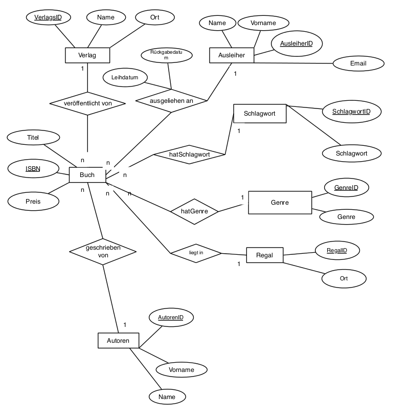
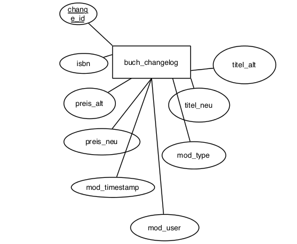

Software Projekt DB II
Heimbibliotheksverwaltungssoftware
von Kevin Goy, Julian Fink und Oskar Jung
ER-Diagramm
Entities und ihre Relationships in einem schönen Diagramm.
Verwendete Software und Architekturen
Swing
AWT
JDBC
Postgresql
Plpgsql
Rules
CREATE OR REPLACE RULE delete_genre AS ON DELETE TO genre
WHERE EXISTS (SELECT * FROM hatgenre hg WHERE OLD.genreid = hg.genre)
DO INSTEAD NOTHING;
Verhindert das Löschen von Genres, die in Relation mit einem Buch stehen
CREATE OR REPLACE RULE buch_log_update AS ON UPDATE TO buch
DO INSTEAD INSERT INTO buch_changelog (change_id, ISBN, preis_alt, preis_neu, titel_alt, titel_neu, mod_type) values (default, old.isbn, old.preis, new.preis, old.titel, new.titel, 'U');
Logt Änderungen der Tabelle "buch"
Trigger
CREATE TRIGGER init_ausleiher
AFTER INSERT ON buch
FOR EACH ROW
EXECUTE PROCEDURE init_ausleiher();
CREATE OR REPLACE FUNCTION init_ausleiher()
RETURNS trigger AS $$
BEGIN
INSERT INTO ausgeliehenan VALUES ( NEW.isbn, 3, CURRENT_DATE );
RAISE NOTICE 'isbn = %', new.isbn;
RETURN new;
END;
$$ language plpgsql;
Initialisiert die "ausgeliehenan" Relation bei einem INSERT auf "buch"
CREATE TRIGGER rueckgabe_trigger
AFTER UPDATE OF rueckgabedatum
ON ausgeliehenan
FOR EACH ROW
EXECUTE PROCEDURE update_rueckgabe();
CREATE OR REPLACE FUNCTION update_rueckgabe()
RETURNS trigger AS $$
BEGIN
DELETE FROM ausgeliehenan WHERE buch = OLD.buch;
INSERT INTO ausgeliehenan
(buch, ausleiher, leihdatum)
VALUES
(OLD.buch, 3, to_date(to_char(CURRENT_DATE,'dd/mm/yyyy'), 'dd/mm/yyyy'));
RETURN NEW;
END;
$$ LANGUAGE plpgsql;
Speichert zurückgegebene Bücher in der "ausgeliehenan" relation mit Rückgabedatum
Adminscript
CREATE OR REPLACE function deleteInactiveLender()
RETURNS VOID AS $$
DECLARE
lender INTEGER;
BEGIN
FOR lender IN SELECT ausleiherid FROM ausleiher
LOOP
IF lender NOT IN (SELECT ausleiher FROM ausgeliehenan) THEN
DELETE FROM ausleiher WHERE lender = ausleiherid;
END IF;
END LOOP;
END;
$$ LANGUAGE 'plpgsql';
Löscht Ausleiher, die zwar noch registriert sind, aber kein Buch ausgeliehen haben
CREATE OR REPLACE function deleteLostBooks()
RETURNS VOID AS $$
DECLARE
curs CURSOR IS select ausgeliehenan.buch, ausgeliehenan.ausleiher, ausgeliehenan.leihdatum, buch.preis, buch.titel, ausleiher.name, ausleiher.vorname, ausleiher.email from buch, ausleiher, ausgeliehenan where ausgeliehenan.buch = buch.isbn AND ausgeliehenan.ausleiher = ausleiher.ausleiherid AND ausleiher.ausleiherid != 3;
rec RECORD;
BEGIN
OPEN curs;
LOOP
FETCH NEXT FROM CURS INTO REC;
IF NOT FOUND THEN EXIT;
END IF;
IF ( date_part('day', current_date::timestamp - rec.leihdatum::timestamp) > 365) THEN
INSERT INTO vanished_books VALUES (default, rec.buch, rec.preis, rec.titel, rec.name, rec.vorname, rec.email);
DELETE FROM buch WHERE isbn = rec.buch;
END IF;
END LOOP;
CLOSE curs;
END;
$$ LANGUAGE 'plpgsql';
Entfernt Bücher aus "buch", die länger als ein Jahr verschollen sind und speichert diese in "vanished_books"
Adminscript
Vertical Slides
Slides can be nested inside of other slides, try pressing down.
Basement Level 1
Press down or up to navigate.
Basement Level 2
Cornify

Basement Level 3
That's it, time to go back up.
Point of View
Press ESC to enter the slide overview. Hold down alt and click on any element to zoom in on it using zoom.js. Alt + click anywhere to zoom back out.
rvl.io
If you don't like writing slides in HTML you can use the online editor rvl.io.
Works in Mobile Safari
Try it out! You can swipe through the slides and pinch your way to the overview.
Marvelous Unordered List
- No order here
- Or here
- Or here
- Or here
Fantastic Ordered List
- One is smaller than...
- Two is smaller than...
- Three!
Transition Styles
You can select from different transitions, like:
Cube -
Page -
Concave -
Zoom -
Linear -
Fade -
None -
Default
Themes
Reveal.js comes with a few themes built in:
Sky -
Beige -
Simple -
Serif -
Night -
Default
* Theme demos are loaded after the presentation which leads to flicker. In production you should load your theme in the <head> using a <link>.
Global State
Set data-state="something" on a slide and "something"
will be added as a class to the document element when the slide is open. This lets you
apply broader style changes, like switching the background.
"blackout"
"soothe"
Custom Events
Additionally custom events can be triggered on a per slide basis by binding to the data-state name.
Reveal.addEventListener( 'customevent', function() {
console.log( '"customevent" has fired' );
} );
Clever Quotes
These guys come in two forms, inline:
The nice thing about standards is that there are so many to choose from
and block:
For years there has been a theory that millions of monkeys typing at random on millions of typewriters would reproduce the entire works of Shakespeare. The Internet has proven this theory to be untrue.
Pretty Code
function linkify( selector ) {
if( supports3DTransforms ) {
var nodes = document.querySelectorAll( selector );
for( var i = 0, len = nodes.length; i < len; i++ ) {
var node = nodes[i];
if( !node.className ) ) {
node.className += ' roll';
}
};
}
}
Courtesy of highlight.js.
Intergalactic Interconnections
You can link between slides internally, like this.
Fragmented Views
Hit the next arrow...
... to step through ...
any type- of view
- fragments
Fragment Styles
There's a few styles of fragments, like:
grow
shrink
roll-in
fade-out
highlight-red
highlight-green
highlight-blue
Spectacular image!

Export to PDF
Presentations can be exported to PDF, below is an example that's been uploaded to SlideShare.
Take a Moment
Press b or period on your keyboard to enter the 'paused' mode. This mode is helpful when you want to take distracting slides off the screen during a presentation.
Stellar Links
It's free
reveal.js and rvl.io are entirely free but if you'd like to support the projects you can donate below. Donations will go towards hosting and domain costs.